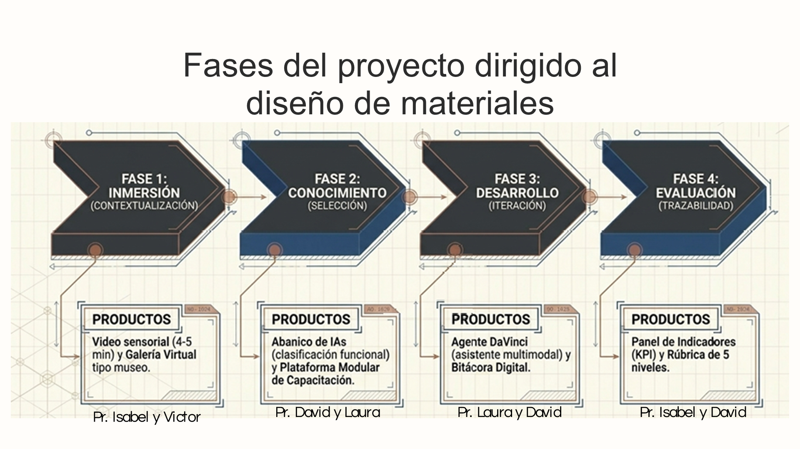
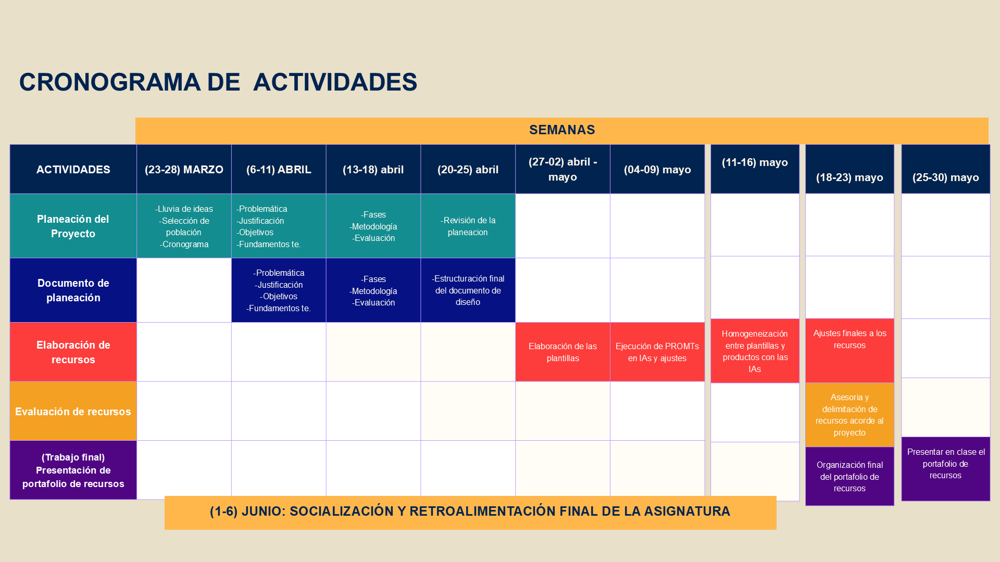
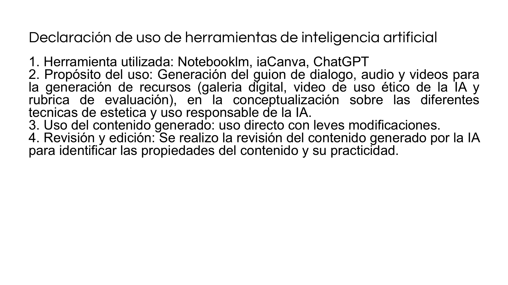
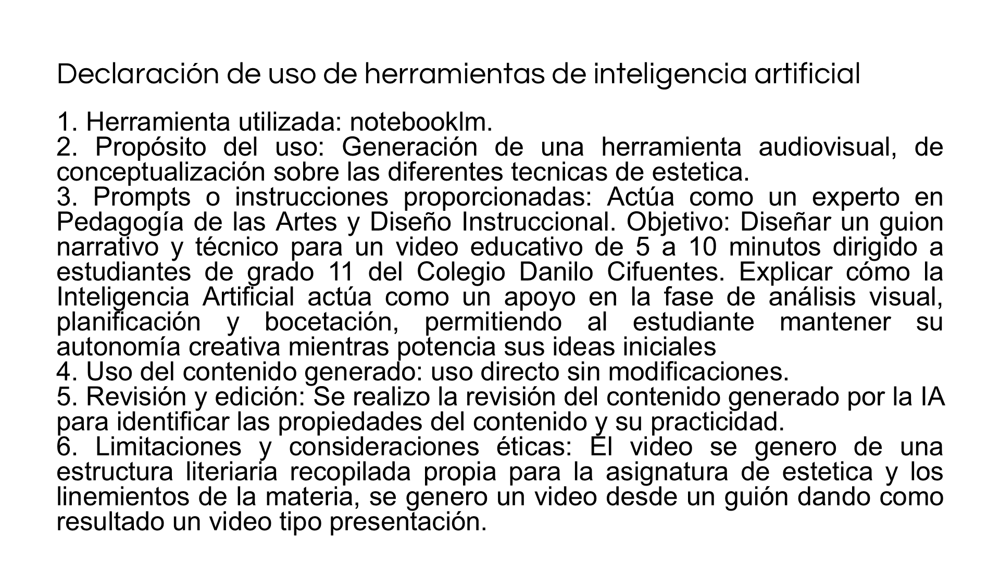

Diseño de Materiales Didácticos
En la asignatura de estética mediante inteligencia artificial
Para proyectos de clase de grado once del Colegio Danilo Cifuentes
Naturaleza del Proyecto
Desarrollo de un repositorio que integra el uso de la inteligencia artificial como herramienta de apoyo en la creación de materiales didácticos.
Introducción y Justificación
- Naturaleza: Transformar una problemática observada en el salón de clase en una oportunidad de integrar el uso de la IA en un proceso guiado. El diseño y creación de recursos en el contexto actual.
- Propuesta: Replantear el uso de las tecnologías dentro del espacio de clase.
- Análisis: Se analizan los criterios de diseño, implementación y regulación del uso de la IA en el contexto escolar, orientados a las necesidades formativas.
- Implementación: Materiales diseñados para integrar la IA en el proyecto de aula mediante el desarrollo de estrategias pedagógicas orientadas al uso responsable.

Problemática Identificada
Identificada por docentes y estudiantes en tres pilares principales:
01. Uso Irresponsable
Uso poco responsable de las herramientas de Inteligencia Artificial en el desarrollo de actividades escolares.
02. Dependencia
Fuerte dependencia tecnológica que limita el desarrollo de habilidades fundamentales en el estudiante.
03. Pérdida de Autonomía
Pérdida de la creación autónoma, plagio, poca originalidad y reducción de la autoría en procesos creativos.
Fundamentación Teórica
Diseño Responsable y Formativo
Gobernanza y Protocolos: Propone una Gobernanza Ética que organiza responsabilidades y protocolos de uso escolar de la IA.
Enfoque Humano: Defiende que la IA debe ser un apoyo para la ideación visual y exploración, no un sustituto de la autoría.
Ética y Autoría: Establece las bases contractuales de honestidad intelectual reguladas a través de acuerdos interactivos.
IA en Educación
Mediación Pedagógica: Exploración y andamiaje de la IA como un agente tecnológico que transforma la didáctica clásica.
Modelo TPACK: Redefinición del rol docente y reestructuración curricular cruzando el contenido tecnológico, pedagógico y temático (IA-TPACK).
Balance de Riesgos: Análisis equilibrado entre el potencial de co-creación y las necesidades reflexivas de los estudiantes de grado once.
Objetivos Específicos y Metas (I)
Objetivo Específico 1
Realizar el fundamento teórico para el diseño y la estructura de materiales didácticos mediante la metodología ADDIE en el proceso de cada proyecto de los estudiantes de grado once en el espacio académico de estética.
Consolidar un marco referencial sólido y pertinente que permita el diseño de materiales que contextualicen a los estudiantes sobre los diferentes tipos de técnicas.
Objetivo Específico 2
Desarrollar un abanico de IAs y una plataforma de apoyo que permitan integrar el uso responsable de la inteligencia artificial dentro del proyecto de aula de cada estudiante, en los procesos de dibujo, diseño, creación y análisis visual.
Establecer un repertorio de IAs que pueden utilizar los estudiantes para el desarrollo de su proyecto, resaltando un abordaje ético y responsable.
Objetivos Específicos y Metas (II)
Objetivo Específico 3
Diseñar un instrumento de seguimiento con criterios establecidos que permitan reconocer el proceso del estudiante en la ejecución de su proyecto e integración del portafolio de recursos.
Que el docente y el estudiante puedan hacer un seguimiento del proceso, avance, integración y uso adecuado de la IA en el proyecto de aula en tiempo real.
Objetivo Específico 4
Establecer unos criterios de evaluación que permitan reconocer la efectividad de los materiales en el proceso del estudiante, estableciendo normas de uso ético, responsable y transparente.
Diseñar un instrumento evaluativo tipo rúbrica e índice IAP que permita determinar la viabilidad y eficacia del portafolio, asegurando que cumpla los objetivos.
Cronograma de Actividades
| Fechas | Fase / Actividad | Responsables |
|---|---|---|
| 23 - 28 MARZO | Planeación del Proyecto Lluvia de ideas, problemática, justificación, objetivos, fundamentación, metodología. |
Profs. Laura y José David |
| 06 - 11 ABRIL | Documento de Planeación Estructuración final del documento de diseño curricular. |
Profs. Isabel y José David |
| 13 - 18 ABRIL | Elaboración de Recursos Inicio de creación de recursos didácticos digitales. |
Profs. Laura y José David |
| 20 ABRIL - 02 MAYO | Elaboración de Plantillas y Ejecución Ejecución de prompts en IAs y calibración de interfaces. |
Profs. Isabel y Víctor |
| 04 - 23 MAYO | Homogeneización y Ajustes Ajustes finales y organización estética del portafolio. |
Equipo de Trabajo |
| 25 MAYO - 06 JUNIO | Socialización y Retroalimentación Evaluación de recursos, sustentación y presentación en clase. |
Equipo de Trabajo |
ADDIE: Ruta Metodológica
- Estructura modular: ADDIE organiza el diseño de los materiales didácticos mediante cinco fases lógicas: Análisis, Diseño, Desarrollo, Implementación y Evaluación.
- Puente didáctico: En este proyecto, permite pasar de la problemática institucional detectada a recursos prácticos y coherentes en el aula de Estética.
- Intencionalidad: Asegura que cada recurso tenga una intención pedagógica clara (sensibilización, exploración visual, feedback tutorado o registro analítico).
- Roles activos: El docente actúa como mediador del aprendizaje y el estudiante como creador crítico que regula su interacción con la IA.

Del Diagnóstico al Diseño
Recursos del Portafolio
- Cápsula Introductoria (F1: Inmersión): Despierta interés y sitúa la problemática de la tecnología en el arte.
- Museo Digital y Fichas Técnicas (F1): Galería 3D para exploración libre y andamiaje técnico.
- Abanico IA y Capacitación (F2: Apropiación): Clasifica herramientas de IA y las regula éticamente.
- Tutor DaVinci (F3: Construcción): Genera retroalimentación adaptativa para refinar bocetos.
- Bitácora y Acuerdo Ético (F3-F4): Custodian y registran la trazabilidad y la honestidad intelectual.
- Rúbrica e Índice IAP (F4: Evaluación): Evalúan de forma cuantitativa y cualitativa el proceso.

Evaluación del Proceso
- Trazabilidad: Monitoreo progresivo de los cambios, iteraciones y justificaciones del boceto con IA en el portafolio.
- Bitácora: Registro continuo de versiones, prompts y auto-evaluación del nivel de agencia.
- Rol de DaVinci: Guía formativa basada en preguntas reflexivas que el estudiante decide libremente aceptar o rechazar.
- Foco Evaluativo: Desplazamiento del resultado visual de la IA hacia la justificación crítica y la curaduría humana en todo el proceso.

Rúbricas: Proyecto y Recursos
Rúbrica del Proyecto (Formativa)
Desarrollo general: Evalúa el cumplimiento de los objetivos y la integración coherente del portafolio en el aula.
Evidencias: Se basa en la trazabilidad de la bitácora digital, la calibración de prompts, y la validación del acuerdo ético.
Foco: Prioriza la actitud reflexiva y la evolución del estudiante por encima del resultado final 100% automático.
Rúbrica de Recursos (Utilidad)
Evaluación del portafolio: Permite que los estudiantes valoren la usabilidad, claridad, accesibilidad y pertinencia didáctica de los materiales.
Retroalimentación continua: Ayuda a los docentes a ajustar las interfaces (ej. DaVinci, abanicos) basándose en las sugerencias del aula.
Pensamiento crítico: Promueve el rol activo y democrático del estudiante en la coconstrucción y mejora de su experiencia escolar.